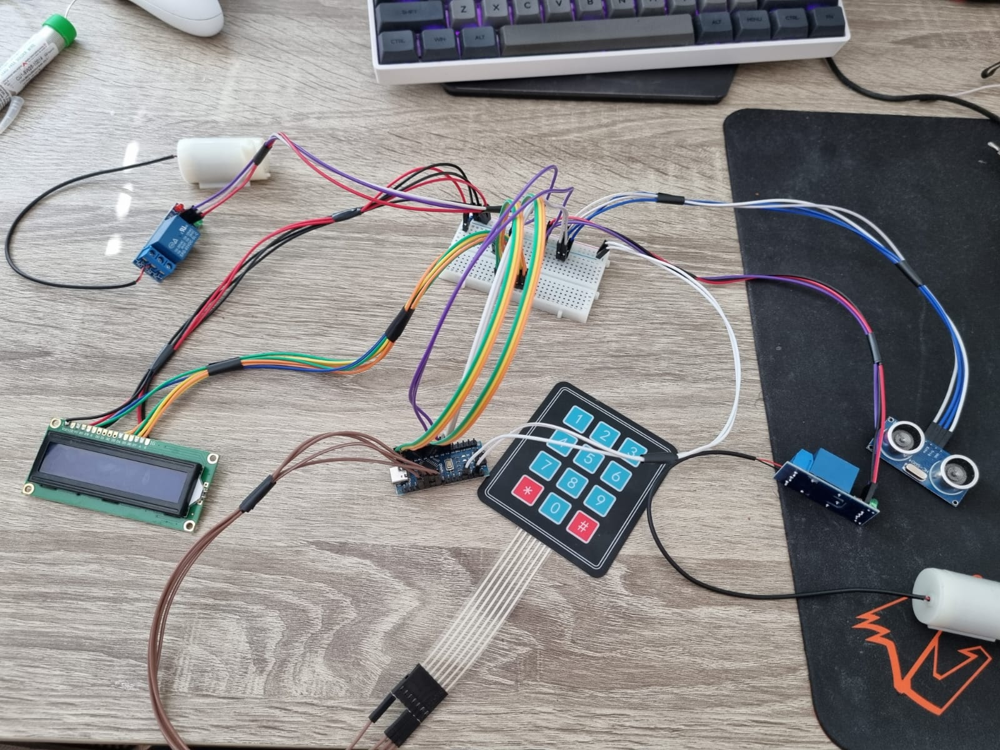

I chose ICT because I always enjoyed working with computers and liked spending time behind a screen, and this degree seemed like the best choice for me personally. One of the biggest motivation for me personally was the possibility of working from home, as I feel the most comfortable at home. The HZ University of Applied Sciences was my go-to ever since I first started looking for an university in Netherlands. So far I have felt motivated and able to do most of the things I was supposed to.
My first experience with programming was back in secondary school and my best accomplishment in terms of programming was creating a working vending machine by using Arduino robots and C++ programming language. Using programming to make physical things move was always my favourite part of programming, but it might change during my study years on HZ.
Picture of the Arduino and its components for the vending machine